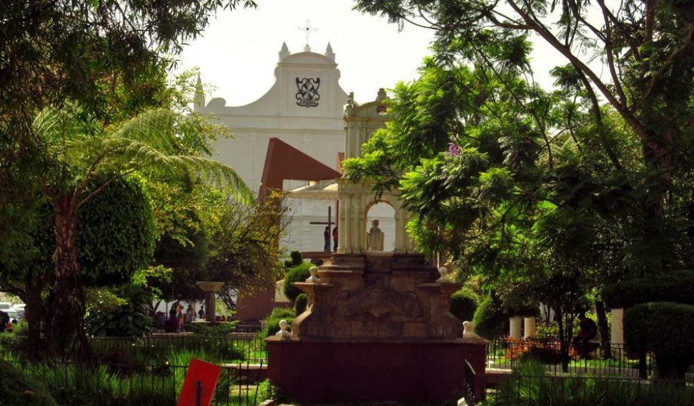

Descripción
Cobán es una ciudad encantadora situada en el corazón de las tierras altas de Guatemala. Conocida por su clima fresco y su exuberante vegetación, Cobán es famosa por sus plantaciones de café y su rica cultura indígena.
La ciudad es un punto de partida ideal para explorar la región, incluyendo las impresionantes cuevas de la zona y las reservas naturales que la rodean.
Ubicación
Departamento de Alta Verapaz, en el norte de Guatemala.
Actividades Recomendadas
- Visita a las plantaciones de café
- Exploración de las cuevas de Candelaria
- Senderismo en el Parque Nacional Las Victorias
- Conocer la cultura Q'eqchi' en los pueblos cercanos
- Disfrutar de la gastronomía local